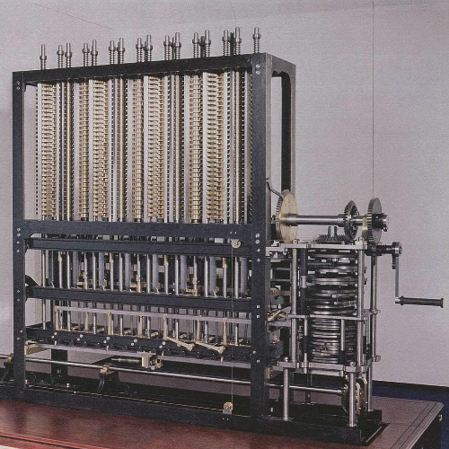
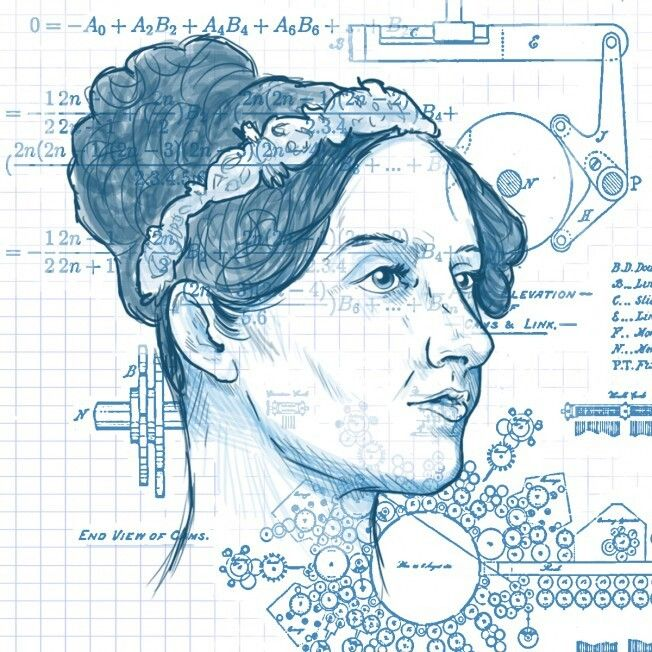
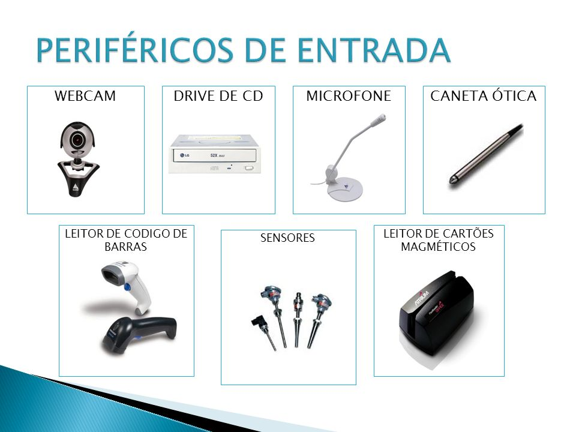

PRIMEIRA MÁQUINA PROGRAMÁVEL
1- Primeira máquina programável
Em 1801, sendo base para o que aconteceria mais tarde, o inventor francês Joseph-Marie
Jacquard, criou a primeira máquina mecânica programável do mundo. O aparelho era uma
espécie de tear que controlava a confecção dos tecidos através de cartões de madeira
perfurados. Os primeiros computadores usavam cartões perfurados semelhantes.
PRIMEIRA MÁQUINA ANALÍTICA
2- Primeira máquina analítica
Já em 1821, 20 anos depois, o matemático inglês Charles Babbage criou uma máquina
analítica que, a grosso modo, é comparada com o computador atual com memória e
programas. Graças ao seu invento, Babbage é considerado por alguns estudiosos como o
“pai da informática”.

PRIMEIRA PROGRAMADORA DE COMPUTADOR
3- Primeira programadora de computador do mundo
Um computador é composto por inúmeros componentes, não é só um aparelho eletrônico,
para ele ser um dispositivo considerado de fato computador, ele precisa, por exemplo, de
uma série de programações. Dito isso, em 1848, Ada Lovelace, matemática inglesa,
escreveu o primeiro software do mundo. Segundo registros, Lovelace, juntou cálculos da
máquina inventada por Babbage e com isso, basicamente criou um algoritmo, que
consequentemente, virou um programa de computador.

ENTRADA DE INFORMAÇÕES NO COMPUTADOR
4- Entrada de informação no computador
Um ponto importante a ser ressaltado é: quando e quem deu início a entrada de
informações aos computadores. Em 1890, Herman Hollerith projeta um sistema de cartão
perfurado para ajudar a calcular o Censo dos EUA daquele ano. Para quem não sabe, os
cartões perfurados, eram instrumentos essenciais para a entrada de informação para os
computadores da época.
Com a sua invenção naquele ano, a máquina poupou o governo de vários anos de cálculos.
Hollerith, também é um dos fundadores da IBM, precursor do processamento de dados.
O computador, tal qual conhecemos hoje, passou por diversas transformações e foi se
aperfeiçoando ao longo do tempo, acompanhando o avanço das áreas da matemática,
engenharia, eletrônica. É por isso que não existe somente um inventor. Outro detalhe
importante: no meio dessas evoluções, hoje, a história do computador é divida em quatro
períodos.

EVOLUÇÃO
evolução
Primeira Geração (1951-1959)
Os computadores de primeira geração funcionavam por meio de circuitos e válvulas
eletrônicas. Possuíam o uso restrito, além de serem imensos e consumirem muita energia.
Um exemplo é o ENIAC (Eletronic Numerical Integrator and Computer) que consumia cerca
de 200 quilowatts e possuía 19.000 válvulas.
Segunda Geração (1959-1965)
Ainda com dimensões muito grandes, os computadores da segunda geração funcionavam
por meio de transistores, os quais substituíram as válvulas que eram maiores e mais lentas.
Nesse período já começam a se espalhar o uso comercial.
Terceira Geração (1965-1975)
Os computadores da terceira geração funcionavam por circuitos integrados. Esses
substituíram os transistores e já apresentavam uma dimensão menor e maior capacidade
de processamento.
Foi nesse período que os chips foram criados e a utilização de computadores pessoais
começou.
Quarta Geração (1975-até os dias atuais)
Com o desenvolvimento da tecnologia da informação, os computadores diminuem de
tamanho, aumentam a velocidade e capacidade de processamento de dados. São incluídos
os microprocessadores com gasto cada vez menor de energia.